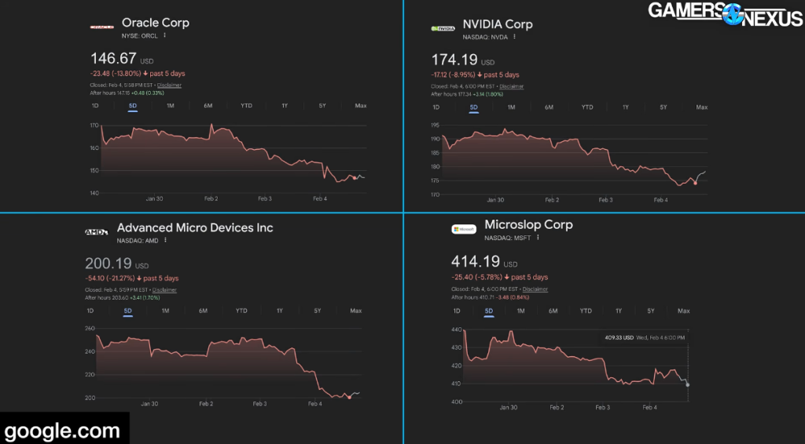
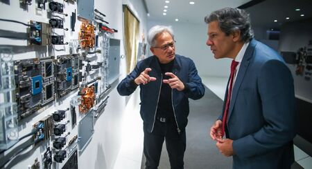

O prédio da IA está estremecendo
(estamos ficando sem metáforas)
As dinâmicas da crise no mercado de IA e na econômia dos EUA estão ficando mais claras. Hoje nós vamos falar sobre os diferentes componentes dessa bolha e onde a coisa tá mais feia
Veja no canal:
- Tudo começou com o estremecimento da bela amizade entre Jensen Huang e Sam Altman
O CEO da empresa, Jensen Huang, teria "expressado dúvidas" sobre uma suposta "falta de disciplina" da empresa de IA em termos de modelo de negócios. Ele também estaria preocupado com a concorrência crescente de outros modelos de linguagem, como o Google Gemini e o Claude.
Em uma entrevista na saída de um evento em Taiwan, Huang respondeu que "nunca disse que iria investir US$ 100 bilhões em uma só rodada" e que o convite foi de "até US$ 100 bilhões". O executivo também reafirmou que de fato vai fazer um enorme investimento na OpenAI, "talvez o maior que já fizemos", e reforçou que "acredita" na empresa.
Ao mesmo tempo, a própria OpenAI teria as próprias reclamações sobre o acordo. Segundo a Reuters, a empresa se mostrou insatisfeita com os recentes chips entregues pela Nvidia para uso em data centers de IA.
Os problemas estariam principalmente no atraso da inferência, etapa de processamento de pedidos e respostas aos prompts dos usuários. Essas questões teriam surgido em testes do Codex, o chatbot da marca voltado para programação.
...
Na rede social X, o CEO da OpenAI, Sam Altman, chamou os rumores de "insanidade" e reforçou o compromisso com a marca. "Adoramos trabalhar com a NVIDIA, que fabrica os melhores chips de IA do mundo. Esperamos ser um cliente gigante por muito tempo", disse o executivo.
https://www.cnbc.com/2026/02/03/nvidias-jensen-huang-denies-openai-deal-rumors-theres-no-drama.html
-
Isso foi considerado por muitas pessoas como o banco dizendo: "não se preocupem pessoal, nós temos dinheiro suficiente para pagar todo mundo"
-
Isso causou uma reação nos preços das ações das big tech:

-
Vamos entender as divisões mercado de IA:
- Hardware para IA: AMD, NVIDIA, talveiz Google
- Empresas de infraestrutura de IA e Nuvem: Oracle, Coreweave, Crusoe, AWS e outras
- Laboratórios de pesquisa em IA: OpenAI, Anthropic, Google, Mistral e etc...
- Startups e produtos baseados em IA: Cursor, Manus, todos os SaaS por aí
-
Então onde tecnicamente está essa bolha? Provavelmente o problema vai aparecer na segunda camada: infraestrutura de datacenters. Porém ele é puxado pelas outras partes:
-
A construção de data centers ocorre com muito dinheiro de empréstimos. Hoje diversos projetos estão em estágios intermediários de finalização e só vão dar retorno de investimento real quando forem prédios completos, cheios de GPUs, usando eletricidade e rodando inferência.
-
A Oracle por exemplo para financiar a construção de data centers, prometidos para a OpenAI, contraiu diversas dívidas. Essas dívidas estão sendo empacotadas pelos credores em investimentos que são repassados em mercado e retornam juros aos investidores (alguém lembra de 2008?)
-
Uma dificuldade da OpenAI pagar a Oracle, falta de demanda por ferramentas de IA, dificuldade de acesso a energia, concorrência interna aos EUA ou externa por parte da China. Todos esses são fatores que podem desencadear um estouro.
-
As relações do governo dos EUA começam a ficar mais claras com as empresas de IA:
-
Só falta o Jensen Huang mandar áudio no zap falando do Trump igual o Mamãe Falou das ucranianas
-
EUA tem o plano Pax Sillica para garantir o acesso a infraestruturas críticas de IA
-
E tem falado cada vez mais em voz alta que os movimentos de expansão e conquista de recursos são explicitamente para garantir a dominância dos recursos para IA.
-
Enquanto isso a possibilidade da 'disrupção' pelas ferramentas de IA está criando uma fuga de ações ligadas a serviços nos EUA o que pode desencadear toda uma outra crise por lá e provavelmente aqui.
-
Enquanto isso [2] o BraZil está falando em dar incentivo fiscal para trazer data center de big tech pra cá.
Reivindicação do setor, o Redata isenta custos de importação de diversos produtos críticos para a instalação de data centers, como as placas de vídeo que sustentam o processamento de nuvem e inteligência artificial.
- Os gringos tão falando até em construir data center no espaço, mas aqui no BraZil a gente oferece o que eles precisarem. Lembrando:
- Nosso território, nossa energia, nossa água
- Hardware deles, empresas deles
